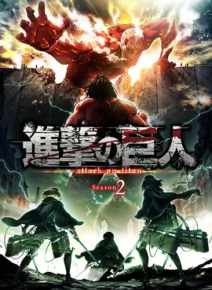

9.5
进击的巨人 第二季
Attack on Titan Season 2
2017
日本
评分 9.5
导演:
荒木哲郎 / 肥冢正史 / 田中洋之 / 平尾隆之 / 菊池聪延
演员:
梶裕贵 / 石川由依 / 井上麻里奈 / 小野大辅 / 神谷浩史
类型:
动作,灾难,科幻
剧情简介
高墙各处的防线在短暂的宁静后再次被撕开裂缝，调查兵团奔赴各地勘查时，接连不断的异常让空气变得沉重起来。偏僻的村落里房屋半掩、马匹散落街道，仿佛所有人都在一瞬间消失；城墙边缘出现的巨人却没有破损的入口，像是凭空出现，这些诡异迹象让士兵们第一次直面未知带来的恐慌。随着部队急速重整，紧张情绪在每个人之间蔓延，任何细微声响都像预示着新的危机正在逼近。艾伦、三笠和阿尔敏在这动荡的局势中重新聚首，他们的目光里已没有当初训练期的青涩，多了在生死边缘磨出的冷静。森林战线中，枝叶被疾驰的立体机动装置划得震动不止，士兵们贴着树干穿梭，每一次转折都像是赌上性命的抉择。巨人的咆哮在林间回荡，与兵刃的碰撞声交织成压迫性的节奏，让人几乎无法分辨是风声还是心跳在耳边轰鸣。调查的深入，使隐藏在墙壁内部的秘密逐渐显露。某些同伴身上的异常举动在悄然累积，信任开始摇晃，逼迫所有人不得不重新审视身边的人与这片土地真正的历史。当敌人与友军的界线变得模糊，一场更深层的威胁悄然浮现，巨人不再只是单纯的怪物，它们像是指向更巨大谜团的钥匙。危机不断逼近的同时，人类内部的裂缝也被迅速撕开，让这场战斗从外部的厮杀延伸到内心的挣扎，而由此掀开的真相远比任何人预料的更加残酷。